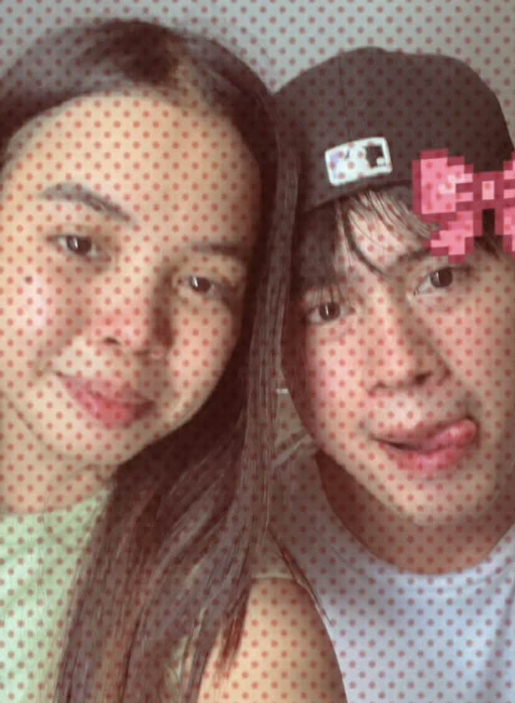
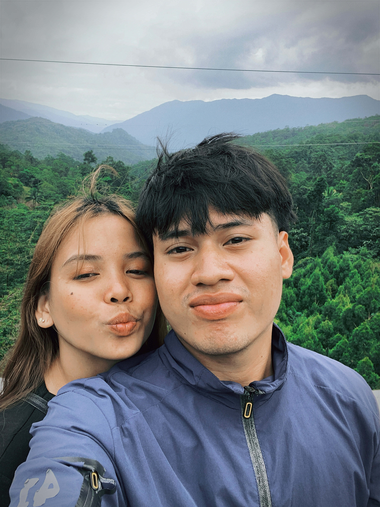
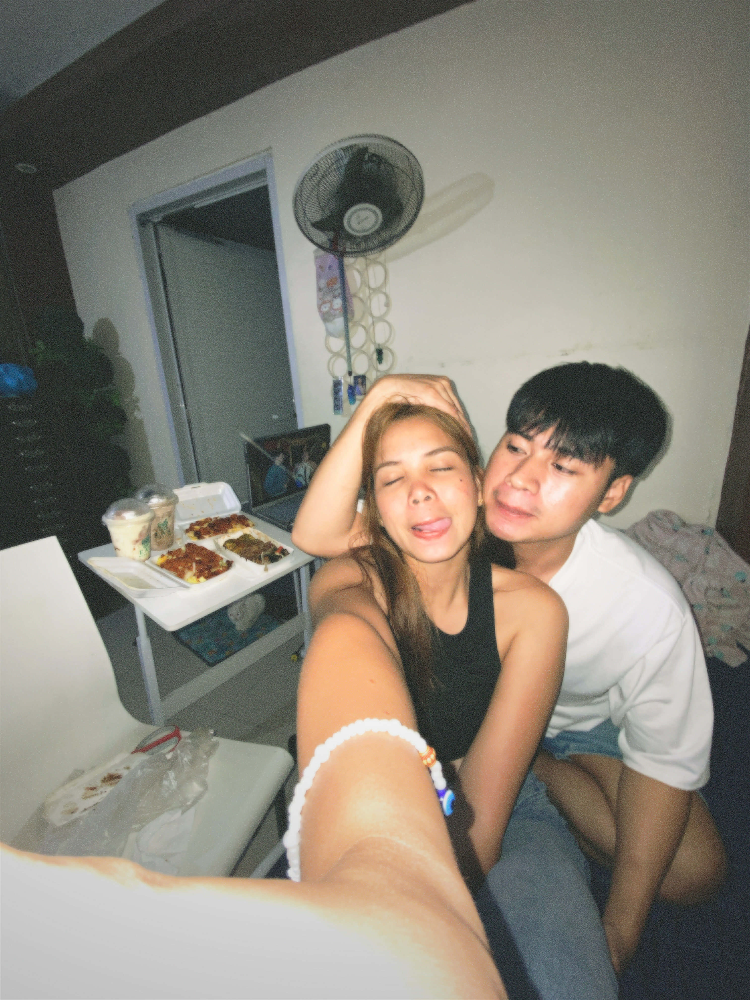

For Bern 💖
Hello Bern,
Una sa lahat nagpapasalamat din ako dahil sa napaka dami nating memories at masasayang magkasama tayo kulitan, bardagulan, hindi mawawala yung away at tampuhan, sobrang saya ko dahil naging part ka ng buhay ko, Ik na marami din akong pagkukulang, really sorry sa pagiging oa ko at madamdamin at sa mga actions ko lalo na yung pagiging masungit ko sa totoo lang napaka dami kong natutunan sayo kung pano maging malakas, at marami pang iba dahil isa ka sa pinaka malakas at lumalaban sa hamon ng buhay, sa totoo lang na motivate ako na mas igihan ko pa dahil sayo kasi kahit na gaano kahirap ang buhay, nakukuha mo pa din ipagpatuloy kahit na sa kabila ng lahat na dodown ka nakukuha mo pa ding magpatuloy. kaya mas igihan mo pa ng makamit mo ang mga pangarap mo sa buhay.
Alam ko na mahirap para satin to, andito na tayo sa part na sinasabi natin noon na dapat paghandaan na natin hehe, pero kahit na ganun maging matatag tayo para sa mga pangarap at kinabukasan natin, mahirap man na hindi tayo hanggang dulo mas mabuti na nga yung ganito medyo naagapan na natin para hindi mas lumalim pa yung sugat sa mga loob natin, “Im so proud of you bearn” palagi lang akong naka supporta sayo sa malayo kahit na hindi ko man ito makikita dahil marami rami ka ng napatunayan sa sarili mo at unti unti mo ng napagawa ang bahay nyo, mas maganda pa ang kalalabasan nyan lagi mong tatandaan na lahat ng mga paghihirap mo ay may malaking kapalit na maganda o gantimpala para sayo.
Napakasaya ko ng nakilala kita simula pa lang nung una, halos hindi ko na masabi o maipaliwanag kung gaano ba kita ka mahal hehe, Ingat ka palagi bern!🫶🏻
sabi ko nga sayo “You are my last card” and I will never find someone, but just like you said if magkaron man o kusang dumating and same religion then yeah. always lang me here still hoping and not expecting at same time. gulo diba haha, I hope na makita natin ang isa’t isa at mayakap kita ng mahigpit kahit na panandalian, You’re always part of my prayer i hope na maging success o pumabor satin ang lahat.
Mahal na mahal kita Bern!🤍🫶🏻
-As my final act of love, “Fi Amanillah”
Our Memories 📸


